Each case study follows a structured consulting format — from client background through architecture, implementation, and measurable outcomes.
Security
Microsoft 365 Security Assessment & Remediation
Duration: 3 weeksScope: 22 usersIndustry: Legal ServicesLocation: Grand Cayman
Client Background
The client is a law firm operating in the Cayman Islands with 22 users across two partners, six associates, and fourteen support staff. The firm handles sensitive legal and financial matters for offshore clients, generating and storing privileged communications, confidential financial records, and PII on a daily basis.
The firm had been running Microsoft 365 Business Standard for two years. The environment was originally configured by a previous IT provider and had never been formally reviewed since deployment. The baseline security maturity was low: no formal security policies, no MFA enforcement, no security monitoring, and no documented configuration baseline to drift against.
Two phishing incidents in the six months prior to the engagement — one resulting in a compromised staff account — prompted the partners to commission a formal assessment. An upcoming cyber insurance renewal added urgency: the insurer had explicitly flagged MFA enforcement and email domain authentication (DMARC/DKIM/SPF) as mandatory requirements for continued coverage.
Problem
The assessment identified a cluster of configuration gaps that had accumulated silently since initial deployment. None of them produced visible failures — email still worked and users could still sign in — but collectively they created an attack surface wide open to the techniques actively being used against Microsoft 365 environments.
The most critical findings and their attack surface:
No Conditional Access policies. Authentication was evaluated identically regardless of user, location, device, or risk signal. A stolen credential gave unrestricted tenant access. No control existed to stop it.
Legacy authentication not blocked. Protocols like IMAP, POP3, and Exchange ActiveSync bypass MFA entirely. The firm's earlier phishing incident could have been used to access the victim's full mailbox via these protocols with no additional barrier.
Device code flow not blocked. The attack sends a victim a real Microsoft URL, the victim completes MFA on their own device, and the attacker receives a valid session token without ever touching the password or triggering a legacy auth prompt.
Admin account had an active mailbox. The Global Administrator account received email. A successful phishing attack against this account would give an attacker complete control over the entire tenant in one step — disable MFA, create backdoors, exfiltrate data, delete audit logs.
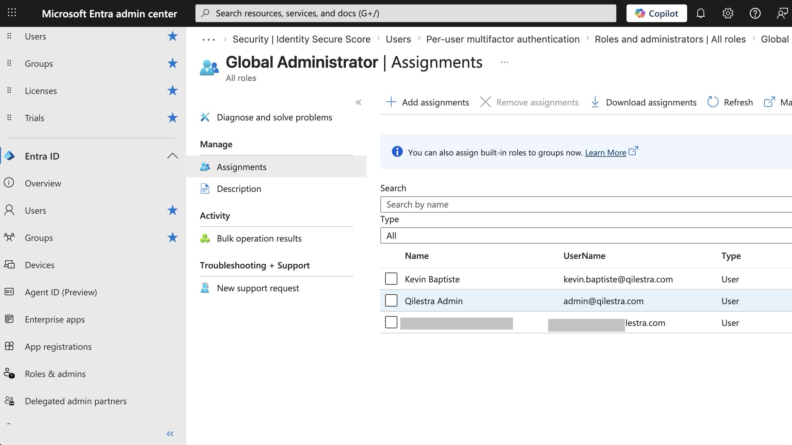
Global Administrator assignments — multiple user accounts holding the role, including accounts with active mailboxes
Audit logging was disabled. No record existed of who accessed what data, what admin changes were made, or what emails were sent. A breach could have been ongoing for months with no forensic trail and no ability to satisfy an insurance claim.
No email domain protection. Without DMARC, DKIM, and SPF, anyone could send email that appeared to originate from the firm's domain.
Anti-phishing at default settings. User impersonation protection, domain impersonation protection, and mailbox intelligence were all off.
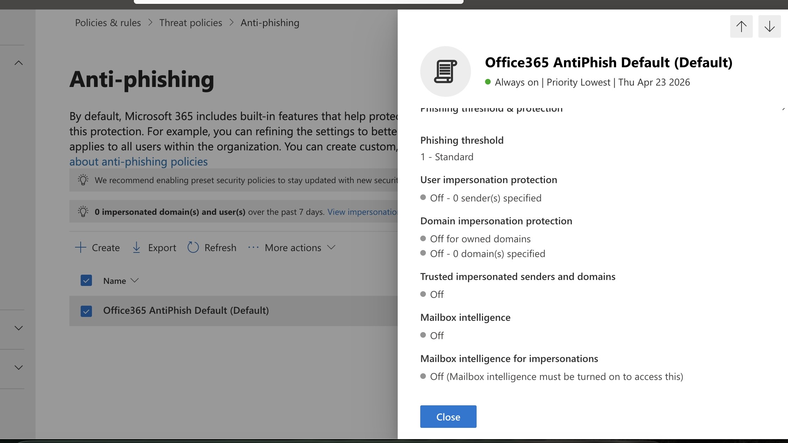
Anti-phishing policy — default configuration with impersonation protection and mailbox intelligence off
No DLP policies. Sensitive client data could be emailed externally or shared through SharePoint with no detection or blocking.
SharePoint external sharing unrestricted. Content could be shared with anyone, including unauthenticated external users via anonymous links.
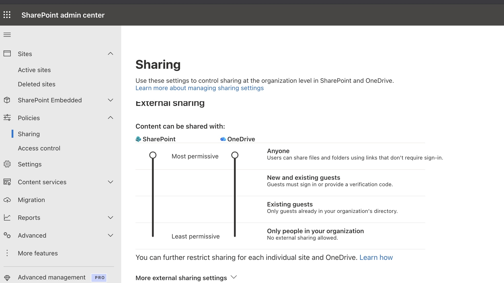
SharePoint sharing settings — both SharePoint and OneDrive set to Most Permissive
Overly permissive user settings. Users could register applications and guests had the same access level as internal members — both control surfaces for credential theft and lateral movement.
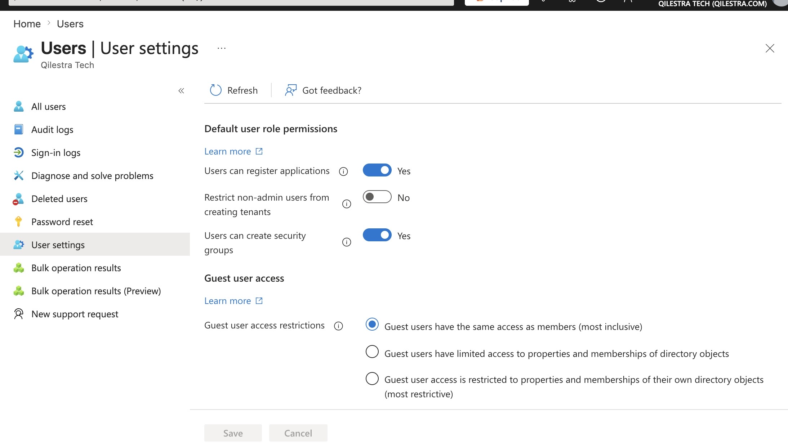
Entra ID user settings — app registration open to all users, guest access unrestricted
Licensing gap. Microsoft 365 Business Standard does not include Conditional Access, Intune, or full DLP capabilities. The controls needed to address the most critical findings required Business Premium.
Technical Environment
M365 licence at engagement start: Business Standard — upgraded to Business Premium as Phase 1 prerequisite
Identity provider: Microsoft Entra ID (free tier at start; P1 unlocked via Business Premium; P2 provisioned for partners and admin accounts)
Users: 22 — 2 partners, 6 associates, 14 support staff
Email platform: Exchange Online
File storage: SharePoint Online and OneDrive for Business
DNS provider: Hostinger
Devices: Unmanaged — mix of Windows and macOS, no MDM enrolled at engagement start
Automation platform: GitHub Actions with workload identity federation
Architecture
Before Remediation — Flat Trust Model
The pre-engagement architecture had no authentication controls layered between a credential and tenant access. Any valid username and password — regardless of source — reached Exchange and SharePoint directly. There was no identity perimeter.
Pre-Remediation State
Identity
Entra ID (Free)
No CA Policies
No MFA
Legacy Auth Enabled
↓ any valid credential = full access
Apps
Exchange Online
SharePoint
Teams
↓ no data protection layer
Data
No DLP
No Audit Logging
External Sharing Open
After Remediation — Layered Zero Trust Model
Post-engagement, every authentication attempt is evaluated against a set of conditions before any access is granted. Device compliance, location, user risk, and authentication strength are all enforced as access controls. Data is protected by DLP at the point of transmission and full audit logging provides the forensic trail required for insurance and compliance purposes.
Post-Remediation State
Identity
Entra ID P1/P2
MFA (All Users)
FIDO2 (Partners)
↓ evaluated by Conditional Access engine
Access
Block Legacy Auth
Block Device Code Flow
Trusted Locations
Compliant Device
↓ access granted to protected applications
Apps
Exchange Online
SharePoint
Teams
↓ data protected at rest and in motion
Data
Purview DLP
Unified Audit Log
Restricted Sharing
↓ email perimeter authenticated
Email
SPF
DKIM
DMARC p=reject
Safe Links / Attachments
↓ continuous posture monitoring
Monitoring
Maester (Weekly)
GitHub Actions
Log Analytics
Email Report
Before — Attack Surface
Password alone = full tenant access
Legacy auth bypasses all MFA controls
Admin account directly targetable via phishing
Domain spoofing unrestricted
No forensic trail for insurance or investigation
Client data freely exfiltrable
After — Controls Enforced
MFA enforced on every sign-in for all users
Legacy auth blocked at all protocols
Admin account has no mailbox or licence
DMARC/DKIM/SPF deployed and verified
Full unified audit trail active
DLP blocking sensitive data exfiltration
Implementation
Phase 1 — Baseline Remediation
Licence upgrade (Business Premium)
Conditional Access policy set
MFA enforcement (all users)
Block legacy auth + device code flow
Email domain protection (SPF/DKIM/DMARC)
Anti-phishing hardening
Audit logging enabled
DLP policies (Purview)
Break glass account
SharePoint sharing restrictions
Phase 2 — Device Management
Microsoft Intune deployment
Device compliance policies
CA: enforce device compliance
CA: non-persistent browser sessions
FIDO2 (YubiKey 5C NFC) — partners
Remove weaker auth from partner accounts
PIM configuration
Phase 3 — Automation
Azure Log Analytics Workspace
M365 / Intune diagnostic settings
Alert rules (critical events)
Entra ID app registration
GitHub Actions workflow (weekly)
Maester assessment + email report
Handover documentation
a. Assessment
The assessment was conducted using Maester, an open-source PowerShell-based framework that runs automated tests against a Microsoft 365 tenant and produces results mapped to industry benchmarks including CIS Microsoft 365 Foundations, CISA SCuBA, and the Entra ID Security Configuration Analyzer. Maester was connected to the tenant via Microsoft Graph and Exchange Online PowerShell modules to ensure full test coverage.
The initial run was completed against the tenant before any changes were made. Findings were triaged into three categories before remediation work began: findings requiring immediate action, findings requiring infrastructure that did not yet exist (Intune, P2 licensing), and findings that were disproportionate for a 22-person professional services firm. Applying every benchmark control wholesale without understanding the client's operational context is not security consulting — it is checkbox compliance.
313
Total Tests Run
126
Total Failures
53
High & Critical Failures
94
Tests Passed
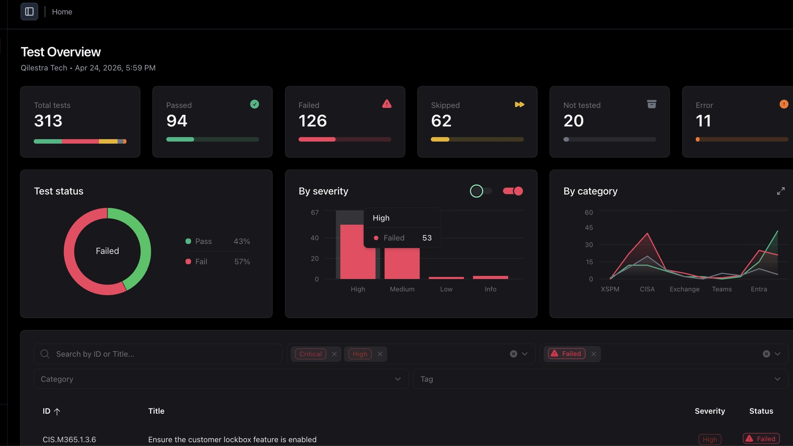
Maester — initial assessment results before any remediation work began
Restrict security info registration — limited to named trusted locations
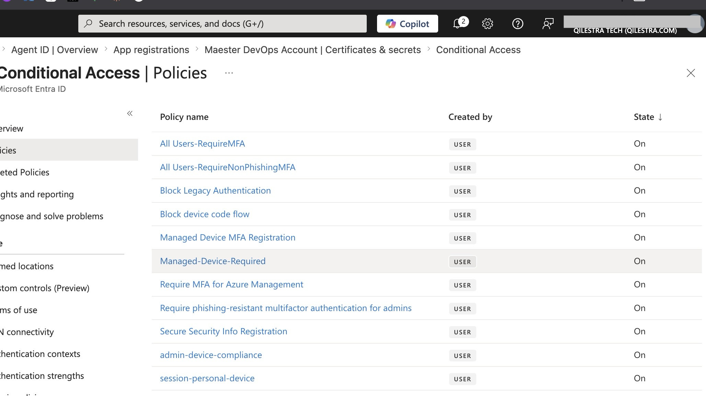
Conditional Access — full policy set deployed and enabled across the tenant
Identity Hardening:
Break glass account created — no mailbox, no licence, excluded from all Conditional Access policies, credentials stored offline
Admin account separated from licensed user account — admin functions only, no email
SSPR disabled for admin accounts
App registration and user consent restricted to administrators; admin consent workflow enabled; consent to risky apps blocked
Custom banned password list deployed via Entra ID Password Protection
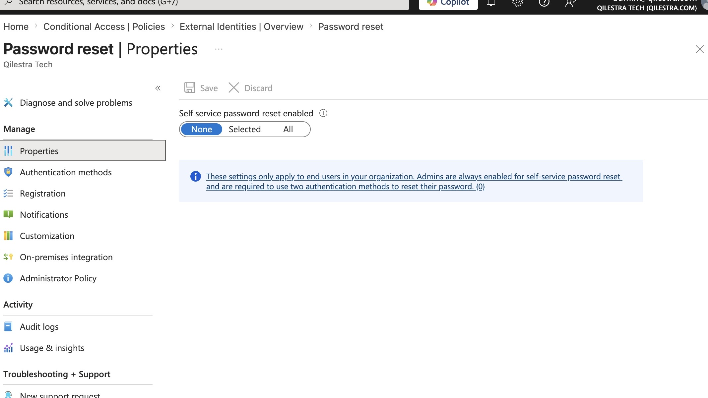
Self-service password reset — set to None, preventing end users from resetting credentials without admin involvement
Email Security:
SPF record published for all firm domains via Hostinger DNS
DKIM signing enabled; CNAME records published; selector records validated with dig; signing confirmed active in Defender portal
DMARC record published at p=reject; sp=reject; aggregate and forensic reporting configured
Anti-phishing policy: phishing threshold raised to Level 3; impersonation protection enabled for both partners by display name and email address; mailbox intelligence on
Safe Links and Safe Attachments deployed for Exchange
External sender warning enabled
Auto-forwarding to external domains blocked via transport rule
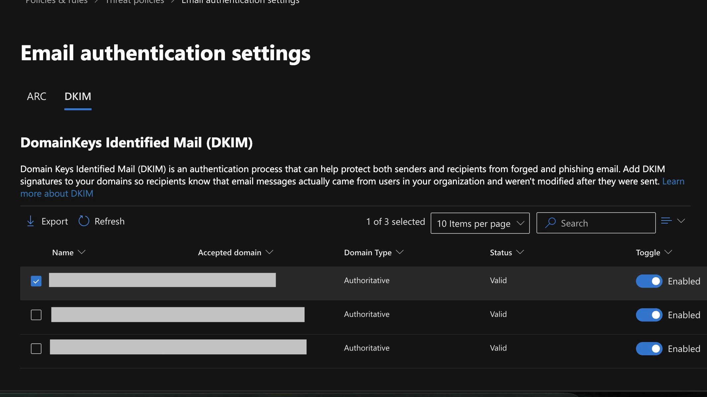
DKIM — all domains showing Valid and Enabled
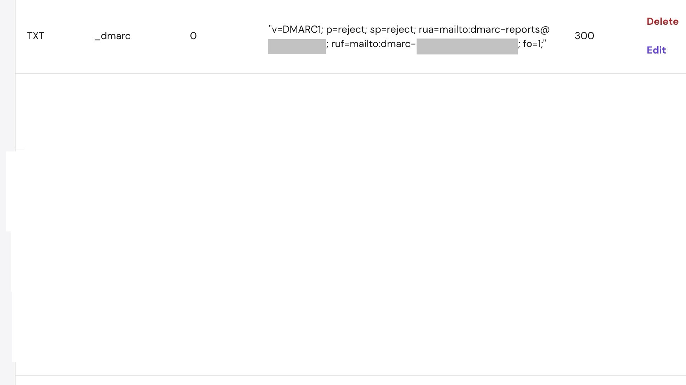
DMARC record — p=reject; sp=reject deployed in Hostinger DNS
Note on Maester DKIM and DMARC test results: CIS.M365.2.1.9 (DKIM) and CISA.MS.EXO.4.2 (DMARC p=reject) both return failed status in the post-remediation Maester report despite correct configuration. DKIM signing was verified active in the Defender portal and CNAME records were confirmed in Hostinger DNS via dig. The DMARC record was independently verified and shows p=reject. Both are assessed as false positives in the Maester test logic for this configuration.
Data Protection and Audit:
Unified Audit Log enabled via Set-AdminAuditLogConfig -UnifiedAuditLogIngestionEnabled $true
Microsoft Purview DLP policies deployed covering credit card numbers, IBAN, passport numbers, and a custom sensitive information type for legal privilege markers
SharePoint external sharing restricted to approved domains only; guest link expiration enforced at 30 days
Phase 2 — Device Management and Phishing-Resistant MFA:
Microsoft Intune deployed; all firm devices enrolled
Device compliance policies defined for Windows and macOS — BitLocker/FileVault, OS patch currency, screen lock timeout, antivirus active
Conditional Access updated to enforce device compliance for all sign-ins
Non-persistent browser session policy applied to unmanaged devices
FIDO2 authentication enabled in Entra ID; YubiKey 5C NFC hardware security keys enrolled for both partner accounts and the admin account; weaker authentication methods removed from partner authentication policies
c. Automation — GitHub Actions Workflow
The continuous monitoring component uses a GitHub Actions workflow to run Maester on a weekly schedule, generate the HTML report as a build artifact, and deliver a structured email summary to the partners every Monday morning. Authentication uses workload identity federation — no client secrets or long-lived credentials are stored anywhere in the repository or GitHub Secrets.
Authentication Design: The workflow authenticates to Microsoft 365 using an Entra ID application registration with a federated credential that trusts GitHub Actions as the identity provider. When the workflow runs, GitHub provides a short-lived OIDC token that Entra ID exchanges for an access token scoped to the permissions granted to the app registration. Nothing is stored — the token is generated at runtime and expires when the job completes.
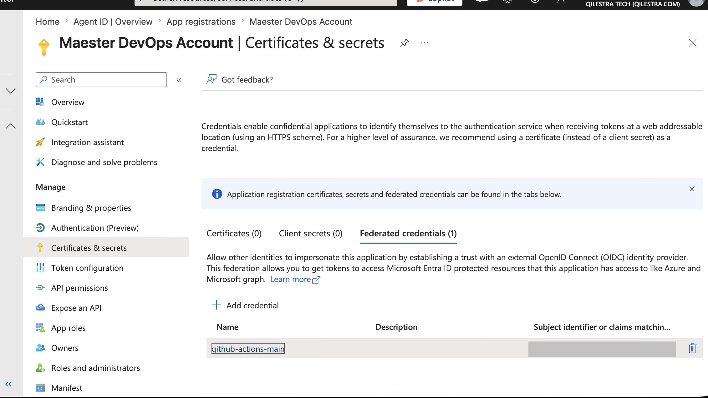
Entra ID app registration — federated credential configured for GitHub Actions; Certificates (0), Client secrets (0)
01
Trigger
Scheduled via cron at 07:00 UTC every Monday. Also dispatchable manually via workflow_dispatch for on-demand runs.
02
OIDC Token Exchange
GitHub requests a short-lived OIDC token from its identity provider. The Azure login action exchanges this for an Entra ID access token using the federated credential. No secrets change hands.
03
Install PowerShell Modules
Maester and all required Graph and Exchange Online modules are installed. Module versions are pinned in the workflow to prevent drift.
04
Authenticate and Run Maester
Connect-MgGraph -AccessToken uses the token from step 2. Maester runs the full test suite and exports HTML and JSON output to a dated results directory.
05
Parse Results
A PowerShell script reads the JSON output and produces a structured summary: total tests, pass count, fail count by severity, and any new failures since the previous run.
06
Upload Artifact
The HTML report is uploaded as a GitHub Actions artifact with 90-day retention — a historical record of posture over time without requiring external storage.
07
Send Email via Microsoft Graph
A PowerShell script calls the Microsoft Graph /sendMail endpoint. The email body contains the structured summary with the full HTML report attached.
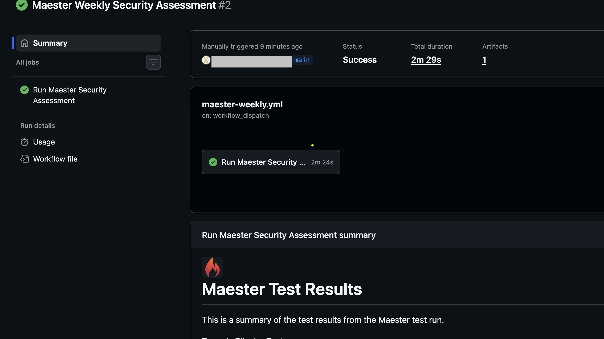
GitHub Actions — workflow run completing successfully with 1 artifact uploaded
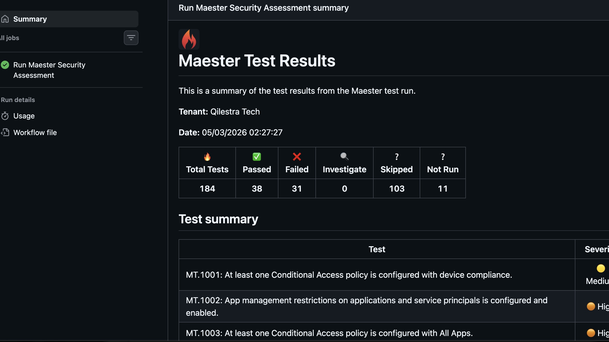
Maester test results embedded in the GitHub Actions run summary
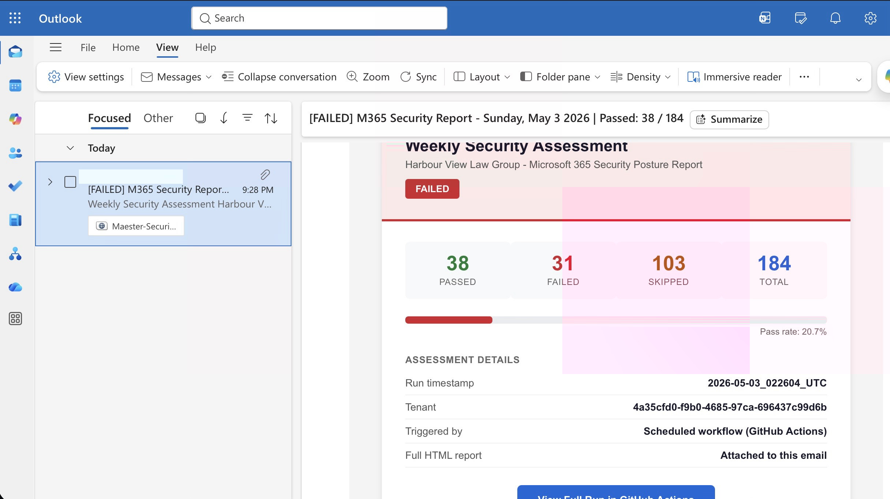
Automated weekly report delivered to Outlook — pass/fail summary and HTML report attached
From an attacker's perspective, the following vectors are now closed:
A stolen password alone no longer grants access to any account. MFA is enforced via Conditional Access on every sign-in for all 22 users.
Legacy authentication is blocked at all protocols. The attack vector used in the firm's earlier phishing incident no longer works.
Device code flow phishing is blocked by Conditional Access policy. This technique does not require stealing a password or installing malware and bypasses standard security awareness training — one policy eliminates the attack surface entirely.
The admin account no longer has a mailbox. A phishing attack against it cannot be delivered via email.
DMARC, DKIM, and SPF are configured and verified for all firm domains. Spoofed emails appearing to come from a partner's address are rejected by receiving mail servers.
Partner accounts are protected by FIDO2 hardware security keys. MFA fatigue attacks and adversary-in-the-middle phishing cannot compromise these accounts remotely.
Findings documented but not immediately remediated:
Four High severity findings remain open. Each was documented with a rationale rather than remediated without context.
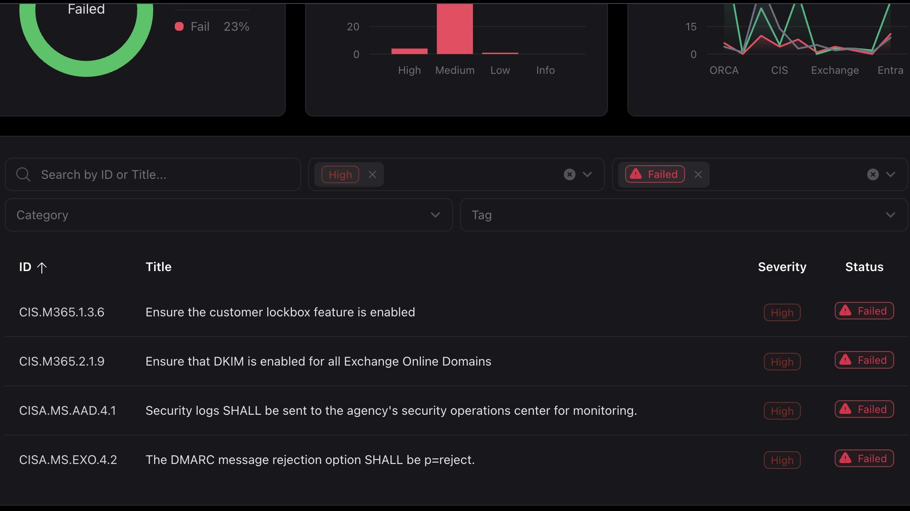
Remaining High severity findings — 4 total, all documented with rationale
CIS.M365.1.3.6 — Customer Lockbox: Valid control but requires a more expensive licence than the firm currently holds. The cost does not justify the risk at this firm size.
CIS.M365.2.1.9 — DKIM enabled for all Exchange Online domains: DKIM signing is enabled and correctly configured. The Maester test returns a failed status despite correct configuration — assessed as a false positive.
CISA.MS.AAD.4.1 — Security logs to SOC: Requires a dedicated SOC team with real-time monitoring capability. Not a realistic requirement for a 22-person firm. The automated weekly Maester report serves this purpose at an appropriate scale.
CISA.MS.EXO.4.2 — DMARC p=reject: A valid DMARC record with p=reject is published and verified via DNS query. The Maester test returns a failed status despite correct configuration — assessed as a false positive.
Operational improvements from automation:
Maester runs automatically every Monday morning. Results are delivered directly to the partners without requiring technical expertise to initiate the assessment or interpret the raw output.
Configuration drift is now detected automatically. If a Conditional Access policy is modified, a permission is changed, or a misconfiguration is introduced, the weekly report flags it before it becomes an incident.
GitHub Actions provides a full audit trail of every assessment run. The artifact retention policy preserves 90 days of weekly reports for trend analysis.
The authentication design — OIDC federation with no stored credentials — means there are no secrets to rotate, no expiry to manage, and no risk of credential exposure in workflow logs.
Get Started
Have a Similar Challenge?
We scope every engagement based on your specific environment and compliance requirements.